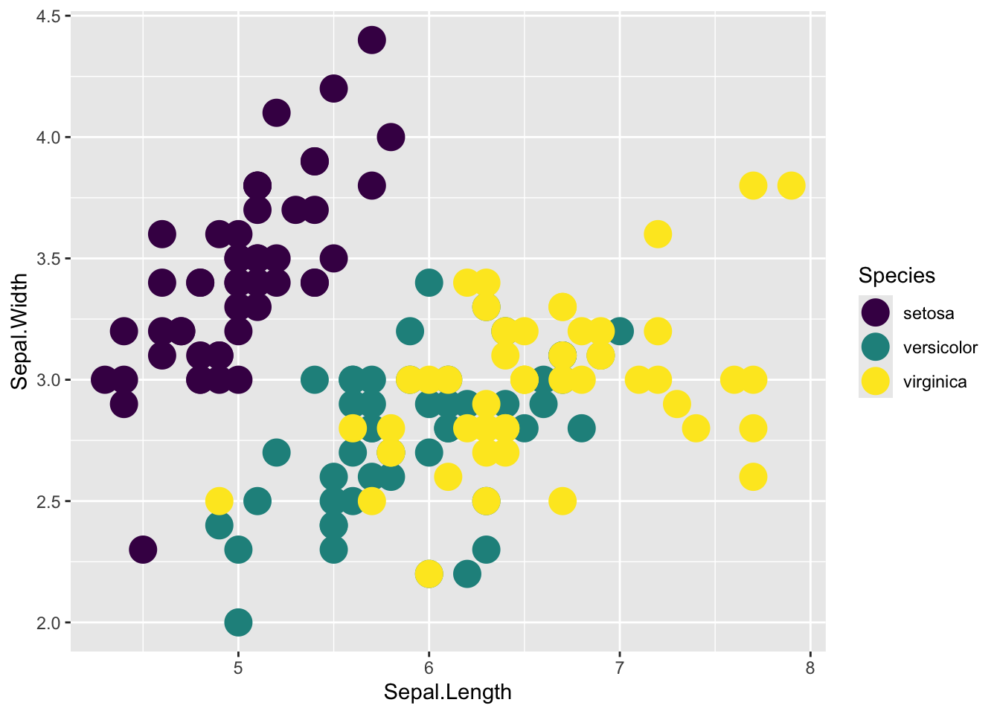
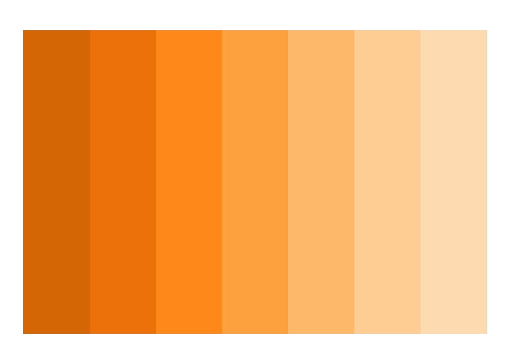

Chapter 41 Colors and Scales in {ggplot2}
This chapter is part of the Data Visualization pathway.
Packages needed for this chapter include {ggplot2}, {scales}, and {paletteer}.
While the {ggplot2} package offers many sensible defaults, at times you will want to go beyond the defaults. This chapter will introduce you to the many ways you can customize the colors and scales in your plots.
41.1 Goals for this Chapter
- learn how to customize colors in your plots
- Concepts to think about choosing colors for meaning
- Understand how to use and modify scales in {ggplot2}
41.2 Colors in R and {ggplot2}
There are several different ways to define colors in R. Let’s take a look at a few standard approaches. You can, of course, just use the default colors in {ggplot2}. But this is a bit lazy, and you will want to take control of the colors in your plot to enhance the communication of your data
One ‘gotcha’ with colors in {ggplot2} is that within the aesthetics function (aes), you you can set both the fill and color arguments separately. Fill will color the inside of a shape, while color will color the border of a shape. At some point you may be puzzled when you set a color and your bar plots do not change color (you are changing only the border with color, not the fill). Most points (with geom_point) only have an outline, but some shapes of points (like pch=21) have both a fill and a border. You will be able to set these separately when you need to.
If you want to take control of the colors in your plot a manual need to use the scale_fill_manual() or scale_color_manual() functions to set the colors in your plot.
:::
41.2.1 Using pre-defined color names
I have borrowed the plot_palette() function from a fabulous blog post by Nicola Rennie at blogpost (it is definitely worth following Nicola for this blog) to show you a few of the pre-defined color palettes available in R.
Tiy will want to run this in your local RStudio session to create this function, which will make it easy to plot color palettes. Copy the code block below and run it in your local RStudio to enable plotting color palettes.
plot_palette <- function(palette) {
g <- ggplot2::ggplot(
data = data.frame(
x = seq_len(length(palette)),
y = "1",
fill = palette
),
mapping = ggplot2::aes(
x = x, y = y, fill = fill
)
) +
ggplot2::geom_tile() +
ggplot2::scale_fill_identity() +
ggplot2::theme_void()
return(g)
}One of the easiest ways to choose a color or build a palette of colors, is to use one of the 657 pre-defined color names in R. All of the standard color names are in lowercase, and are generally used in quotes, as they are not objects in your Global Environment.
Here is an example - copy the code below to your local RStudio and run it to see the colors in action.
Note that as you type in standard color names, RStudio will recognize them and provide a background color for each color name as a preview of what it will look like.
Running the code will give you a plot of the colors in the palette.
Now experiment with this - edit the color names in the vector defined by c() - try “red2”, “green3”, or “purple4” to see the different shades of the colors. Or see the different shades of one color with “red1” through “red4”.
You will find that there is no 5th shade of any color. If you type in an unknown color into this vector (or a typo), RStudio will not give a preview color, and the code will fail to run, with an error message like “Unknown colour name: red5”.
So it can be helpful to see a list of the defined standard colors. You can do this in the console by typing print(colors(), max = 657), which will return a list of the 657 standard color names.
This provides an alphabetical list, which is somewhat helpful. You can see that there are actually 102 shades of gray in R, not fifty. But often you are looking for a particular shade of a color, and it would be more helpful to see the colors clustered by color family. There is a nice cheatsheet that shows these colors here
As long as one of these 657 colors works for you, you are all set. However, you may want to be more particular about the colors you use in your plots. You may want to use a color palette that is more visually appealing, or that is more accessible to those with color vision deficiencies. A more specific way to define colors is with ‘hex codes’.
41.2.2 Using color hex codes
Hex codes are not for casting spells on unwary travelers in the woods, but for defining the red, green, and blue channels of the color you are aiming for. The ‘hex’ stands for ‘hexadecimal’, which is a base 16 numbering system. Each channel is represented by 2 digits, often preceded by a hash (#) sign, like #000027. This hex code represents 00 in red, 00 in green, and 27 in the blue channel. Each two digit number, because it is base sixteen, represents one of 256 shades, from 0-255. In order to represent base sixteen, hex codes use numbers from 0-9, then keep counting with letters from A to F, so that the lowest level is 00, and the highest is FF. Thus #000000 represents no color, or white, and #FFFFFF represents all colors, or black. As an example, the University of Michigan ‘maize’ color is represented by #FFCB05, which has a lot of red, a lot of green, and very little blue, which is why it is a bright yellow similar to ripe kernels of corn.
It is quite common for a corporation or university brand to have specific colors (defined by hex codes or CMYK codes) that they use in their branding website (an eaxmple here). If you can not find the hex code for a particular color, you can estimate it by using a color picker tool in a graphics program, or by using a website like imagecolorpicker.com.
Here is an example of using hex codes in R to define a color palette. These include the primary defined colors of the University of Michigan, which are maize and blue, as well as a few other colors that are used in the University of Michigan branding. Note that these start with a hash character, followed by six characters in the 0-9/A-F range (for hexadeximal base 16), and are in quotes. Note that RStudio gives you nice color previews as you type in the hex codes.
Copy and run this code in your local RStudio to see the colors in action.
Go ahead and experiment with these. Go ahea and edit and change these colors. Remember that the 1st two digits represent the red channel, digits 3 and 4 represent the green channel, and digits 5 and 6 represent the blue channel. Note that you will get no preview color (and will generate an error) if you use digits outside of the 0-F range (G is not part of hexadecimal). You can also add more colors to the vector and plot these.
41.2.3 Screen vs. Print Colors
Note that the hex codes are standard for screen and web colors, but printer colors are a bit different. These are based on mixtures of ink, which are usually expressed as CMYK, for Cyan, Magenta, Yellow, and blacK. These are also represented by numbers from 0-100, with 0 being no ink, and 100 being full ink. You can convert hex codes to CMYK codes using a website like hex.to, or by using a graphics program like Adobe Illustrator or Inkscape.
These don’t convert perfectly. Some conversions are closer than others. For example, the University of Michigan maize color is #FFCB05 in hex, and C0 M20 Y100 K0 in CMYK. The blue color is #00274C in hex, and C100 M60 Y0 K60 in CMYK. You can also convert hex colors to Sherwin Williams branded paint colors at this website.
In an effort to standardize colors, the Pantone matching system (PMS) was developed. This is a proprietary color space that is used in the printing industry. You can convert hex codes to PANTONE colors at this website. The University of Michigan maize color is PANTONE 7406 C, and the blue color is PANTONE 282 C. Many screen, print, and paint colors try to match these PANTONE colors as closely as possible. These colors are optimized for paper type, and C stands for coated paper, U stands for uncoated paper, and M stands for matte paper. If you want to go further down this color rabbit hole, you can see hex and RGB codes for 1526 Sherwin Williams paint colors here.
41.2.4 Transparency and hex colors
You can add a 4th channel to your hex codes, which represents the transparency of the desired color. These also range from 00-FF (256 levels of transparency). The 00 level is fully transparent, and the FF level is fully opaque. This is useful for layering colors on top of each other, or when you want to see other data or text through a color block. Here is an example of a blue color with 0%, 25%, 50%, and 75% transparency, which is a light blue color. Copy and run this code in your local RStudio to see the transparency changes in this color in action.
41.2.5 More obscure ways to select colors
Since R is very much a choose-your-own-adventure sort of language, there are several other ways to select colors. These are less common, but you may run into them on occasion. You can use the rgb() function to define a color by its red, green, and blue channels, which range from 0-1. You can also use the hsv() function to define a color by its hue, saturation, and value, which range from 0-1. You can also use the hcl() function to define a color by its hue, chroma, and luminance, which range from 0-360, 0-100, and 0-100, respectively. These are less common, but you may run into them on occasion. There are functions in R for each color model and you can convert between them if needed.
41.2.6 Using color palettes
Sometimes you want to have a lot of control, and select each color individually Other times, you may want to use a color palette that has been thoughtfully designed by someone else. There are many color palettes that have been designed by artists, data scientists, and others, and you can use these in your plots. There are many packages in R that provide color palettes, and you can use these in your plots. The {paletteer} R package has gathered many of these palettes into one manageable package. Here are a few examples of color palettes that you can use in R. Copy and run this code in your local RStudio to see the colors in action.
## <colors>
## #9EB0FFFF #5AA3DAFF #2D7597FF #194155FF #11181DFF #270C01FF #501802FF #8A3F2AFF #C37469FF #FFACACFF## <colors>
## #8FBCBBFF #88C0D0FF #81A1C1FF #5E81ACFF## <colors>
## #B8D9A9FF #8DBC80FF #5D9D52FF #287A22FF #17692CFFThe {paletteer} package divides color palettes into three categories: continuous, discrete, and dynamic (varies with the number of colors needed). Continuous palettes are used when you have a continuous variable, like temperature or elevation, and you want to show the progression of the variable. Discrete palettes are used when you have a variable that has a number of distinct categories, and provide the same number of colors each time. Dynamic palettes are used when you have a variable that can have a different number of categories, like political party or land use. Dynamic palettes will provide a spectrum across the range with the number of categories you request. You can use the {paletteer} package to select a color palette that fits your data, and then use that palette in your plots.
This berlin palette is a continuous palette that goes from blue to red, and is useful for showing a progression of values. It comes from the scico package, which has many other palettes that you can use.
The frost palette is a discrete palette that goes from a light greenish blue to a dark slate blue, and is useful for showing distinct categories. It comes from the nord package.

The green.pal palette is a dynamic palette that goes from light green to dark green, and is useful for showing a range of categories.
You can use these palettes in your plots by calling the paletteer_c(), paletteer_d(), and paletteer_dynamic() functions, respectively, and specifying the number of colors you want.
There are many packages that specify color palettes, and you can even build one of your own if you often use the same colors. An example built by Eric Ekholm, an apparent fan of the Bluey cartoon, can be found here, and used in the code block below. Copy and run this code in your local RStudio to install the package and see the colors in action.
# note that this requires that you already have `devtools` installed. If you do not, you can install it with `install.packages("devtools")`
devtools::install_github("ekholme/blueycolors")## Using GitHub PAT from the git credential store.## Skipping install of 'blueycolors' from a github remote, the SHA1 (9c72bd5c) has not changed since last install.
## Use `force = TRUE` to force installationA few color-blind safe palettes are built into {ggplot2}. You can use these palettes in your plots by calling the scale_color_viridis_d() and scale_fill_viridis_d() functions, respectively. Here is an example of the viridis palette in action. Copy and run this code in your local RStudio to see the colors in action.
Other options for viridis include “plasma”, “magma”, “cividis”, and “inferno”.
ggplot(iris,
aes(x=Sepal.Length, y=Sepal.Width, color=Species)) +
geom_point(size=6) +
scale_color_viridis_d(option = "viridis")
41.2.7 Color-blind friendly palettes
There are many color-blind friendly palettes that you can use in your plots. These palettes are designed to be easily distinguishable by people with color-blindness, and are useful when you want to make sure that your plots are accessible to everyone. At the Color Palette Finder website, you can find many palettes for normal vision and a variety of kinds of color-blindness that you can use in your plots. This website lets you explore the 2,728 differnt palettes available in the {paletteer} R package.
41.3 Sequential, Diverging, and Qualitative Palettes
In different situations, you may want to use sequential, diverging, or qualitative palettes.
- Sequential palettes are used when you have a continuous variable, like temperature or elevation, and you want to show the progression of the variable.
- Diverging palettes are used when you have a variable that has a logical midpoint, like a mean or a net zero change, and you want to show the difference between two groups.
- Qualitative palettes are used when you have a variable that has a number of distinct categories, and provide the same number of colors each time.
See the PrettyCols package See the RColorBrewer package
Here are some examples of each type of palette. Copy and run this code in your local RStudio to see the colors in action.
library(PrettyCols)
library(RColorBrewer)
# Diverging Palettes
plot_palette(prettycols(n = 9, "PurpleGreens"))

41.4 Choosing Colors with Meaning
While it is easier to use a plug and play palette, if you want your data visualizations to stick with your audience, it is worth thinking about the meaning of colors, which can vary across cultures.
It is common for a red color to represent danger, stop, heat, or a warning, while green represents go, safe, or good. This can be problematic for folks with red-green color blindness, but it is helpful to think about when you are choosing colors. Red may represent bad outcomes, or death. Green or blue may represent good outcomes, or life.
Blue is often associated with calm, trust, or cold, while yellow is associated with warmth, happiness, or caution. Purple is often associated with royalty, luxury, or mystery, while orange is associated with energy, creativity, or fun. Black is often associated with power, elegance, or death, while white is associated with purity, cleanliness, or peace. These associations can vary across cultures, so it is worth considering the cultural context of your audience when choosing colors.
In terms of clinical studies and exposure levels, it is helpful to use a color palette that identifies the control, or placebo, as gray. This is to differentiate it from your active intervention, which can be in a color like blue or green. This is helpful for your audience to quickly identify the control group, and the intervention group, in your plots. When the intensity of the exposure varies across arms, it is helpful to use a color palette that goes from light to dark, or from low to high, to show the progression of the exposure. This is helpful for your audience to quickly identify the level of exposure in your plots.
For example, in comparing outcomes for 3 dose levels of the active intervention (low, medium, and high) to a placebo or vehicle control, you could use a color palette that goes from gray to blue3 to show the progression of the dose levels. This would help your audience quickly identify the control group, and the low, medium, and high dose groups in your plots. Copy and run this code in your local RStudio to see the colors in action. This clear translation of increasing exposure to the treatment to color intensity will help viewers understand the meaning of your plots.
If you had more levels of exposure, you could use one of the palettes from the {RColorBrewer} package, which has many palettes that are colorblind safe. Copy and run this code in your local RStudio to see the colors in action.
When you are choosing colors for your plots, it is helpful to think about the meaning of colors, and how they will be interpreted by your audience. You can use the {paletteer} or {RColorBrewer} packages to select a color palette that fits your data, and then use that palette in your plots. You can also build your own color palette, to make your plots more meaningful to your audience.